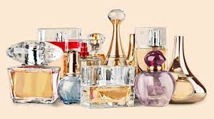

Para los perfumistas una de estas palabras se refiere al olor aislado de una fragancia; otra describe la estela de perfume que deja una persona al pasar y para el resto de los mortales estas palabras significan muy poco o, directamente, nada y pueden hacer del mundo de la perfumería un olimpo reservado solo para unos cuantos.

Si hay algo que distingue a Perfumería LAXURY del resto, es el servicio. Garantizamos la entrega de los pedidos en 24 horas.
El servicio es hoy en día uno de los valores añadidos más valorados por el cliente dado que, la política tanto de producto como de precio, suele ser muy similar en las distintas empresas del mismo sector. Es por ello por lo que Perfumería Internacional ha apostado muy fuerte en ese sentido mediante sinergias con las empresas más competitivas y que ofrecen mejor servicio del mundo de la logística y almacenaje..